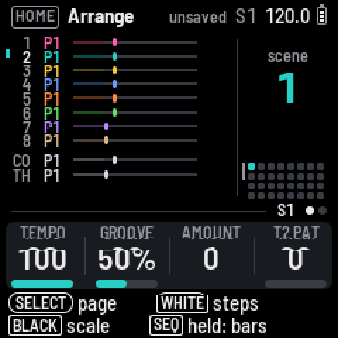

Preview as:
landscape
portrait
· the keyboard strip and all choices live inside the phone frame
Chord in
C major
7ths
C
C · E · G
Hold these together. Root outlined.

in the scale
the chord
root
Key & scale
Keys off
Centre
Left
OCT on the FM-1
−
0
+
C major